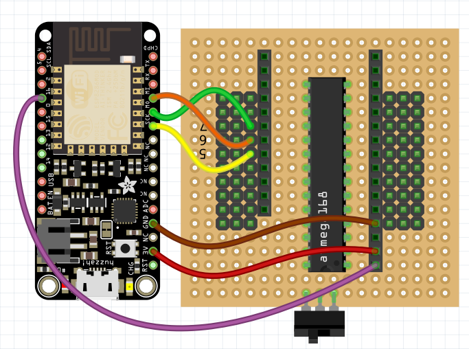

Programming the Spinal Cord¶
Published on 2017-01-14 in Tote.
n the previous log I made a decision to use an Adafruit Feather board for the robot’s brains, and a bare ATmega chip in a DIP package for its spinal cord – that is, the servo controller. That’s supposed to make the board much easier to solder even by inexperienced builders. But wait a minute! How are they going to get the servo controller program onto those chips? Will that not require some extra hardware? Sadly, yes.
It will require six extra wires.
The trick is to use the Feather board as an ISP programmer, using the “Arduino as ISP” example sketch from the Arduino IDE. You will need to make the following connections:
Now, in your Arduino IDE go to Files→Examples→11.ArduinoISP and select that example. Then scroll to around line 68 and change this:
// Configure which pins to use:
// The standard pin configuration.
#ifndef ARDUINO_HOODLOADER2
#define RESET 10 // Use pin 10 to reset the target rather than SS
#define LED_HB 9
#define LED_ERR 8
#define LED_PMODE 7
Into this:
// Configure which pins to use:
// The standard pin configuration.
#ifndef ARDUINO_HOODLOADER2
#define RESET 0
#define LED_HB 2
#define LED_ERR 4
#define LED_PMODE 5
Then go to Tools→Board and select the Adafruit HUZZAH board, then do Sketch→Upload. You have your programmer ready.Then to program the chip, load the sketch with the servo controller, change the board to Arduino Uno, select Tools→Programmer→Arduino as ISP, and do Sketch→Upload Using Programmer. You should see some blinking lights on your Feather, and then your chip is programmed.
In the end, I will probably make a Makefile that does the equivalent of the above procedure automatically, to streamline the experience a bit.